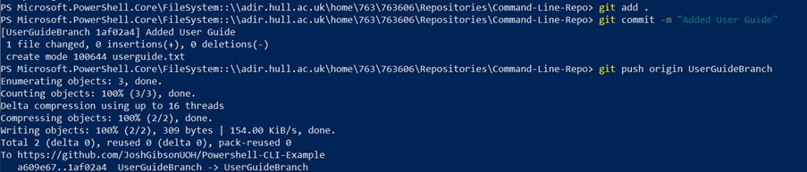

Like in GitHub desktop, branches can also be created and managed using the command line.
To create a branch first tun the command:
Git checkout –b nameofthebranch
This will create a new branch and immediately move us into it. We can confirm the creation of our new branch by writing the git branch command, which will list all of the branches that currently exist.
The Asterix (*) shows the branch that you are currently working on.
Add a new file to your local repository and add it to your repositories stage by using git add as shown previously.
Now we have created a branch and made some changes to it we need to push it to GitHub so that it can be accessed from anywhere.
To do this we use the git push command as we did previously, but instead of pushing the “main” branch we are instead going to push the branch that we just created. To do this enter the command:
Git push origin nameofbranchyoujustmade
And press enter. As it did previously the command line will update to show that the branch has been pushed to GitHub, similar to below:
Once again, we can go to GitHub to ensure that the branch has been pushed successfully.
Pull requests to merge these changes back into the main branch are then completed as they would be normally using the GitHub web GUI – for more information on this check the pull requests section here
When a branch has been merged into a project using GitHub we then need to update our local version of the repository to reflect this.
To do this we must first switch back to the main branch in the command line, we do this using the command:
git checkout main
Now we are back in the main branch we can update it using the pull command we used earlier
git pull
This will update the main branch we are currently working on and the command line will change to reflect this:
Congratulations – you can now branch and merge using the command line!